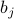

Overview
Welcome back to class! Today (Wed Week 3) Prof. Kivelson began introducing some general tactics that help us solve statistical mechanics problems.
Outline of Lecture
Motivation
-
Motivation and Overview
Jenson's Inequality
Proving the Variational Principle
Connection to Quantum Mechanics and trial wavefunctions
Discussion: does ‘‘best’’ mean ‘‘good enough’’
-
Applying non-interacting variational ‘‘ansatz’’ to d-dim Ising Model
Solving for ‘‘best’’ guess of 
Interpreting the solution
Discussion: What can mean field theory teach us?
Motivation / Overview
Back in 170, all of our systems were simple, non-interacting systems, where the Hamiltonian separates easily into a sum over individual particles, and there's no cross-terms between particles. This allows us to sum over all the states very easily in the partition function.
However, most of the interesting phenomena in Nature have to do with interacting systems!Unfortunately for us, life becomes much harder when you introduce interaction terms in the Hamiltonian. The sums are no longer easy to calculate, and the statistical mechanics become much more complex.
The whole point of 171 is to figure out how to deal with interacting systems.
Sometimes if you're clever, you can manage to solve things exactly. For instance, last week, we solved the 1D model by using the trick of transfer matrices. But in general, we won't be so lucky; most problems in stat mech are quite hard and there's no obvious trick to calculating the partition function.
Often, the best we can do is to apply various approximation schemes to understand the thermodynamics of interacting systems.
Today in class, we began to talk about two such approaches.
The Variational Principle
The variational principle allows us to reframe an unknown problem in terms of a known problem; it tells us how we can ‘‘guess’’ the closest possible answer in terms of a ‘‘trial’’ solution.
For instance, suppose we'd like to understand the general d-dimensional Ising model. (So far we only understand
 .) This general task is rather difficult, but if we apply the variational principle, we can reframe it in terms of an easier task, such as an Ising model where
.) This general task is rather difficult, but if we apply the variational principle, we can reframe it in terms of an easier task, such as an Ising model where  so the spins don't interact.
so the spins don't interact.If we use the variational principle to reframe the general interacting Ising model in terms of a non-interacting Ising model…our solution naturally leads to mean-field theory!
Mean-FIeld Theory
The mean-field approach is a crude (!) approximation for understanding the behavior of interacting systems. In this caricature, we assume that every single particle in the system only experiences the average behavior of its neighbors.
Now you should be thinking, there's no way this can be a good approximation! After all, the heart of statistical mechanics lies in the fluctuations – sometimes a site will experience this environment, sometimes it'll experience another environment – and if we average over all these rich and pithy fluctuations, how the hell are we supposed to end up with anything meaningful? Well, there's two parts to the answer…
Half of the answer is, ‘‘It's the easiest thing we can do, godammit, take it or leave it!’’
Even though mean field theory is so naively simple, it can still teach us lots of useful lessons about the thermodynamics of these systems.
Spoiler alert: for the 2D Ising Model, it turns out that the mean-field predictions are qualitatively correct, but quantitatively incorrect. Mean field theory correctly predicts a phase transition between ferromagnetic and paramagnetic behavior, but it fails to predict the exact temperature. The exact critical temperature is around , but mean field theory incorrectly predicts . Furthermore, mean field theory fails to predict various ‘‘critical exponents’’ for how quantities like the magnetic susceptibility vary around the critical point.
The reason mean field theory fails so drastically near the critical point is that it fails to take into account the fluctutations in the environment around any particular site. And as you remember, fluctuations become more and more important near the critical point!
The other half of the answer is, ‘‘Ahem, mean field theory is actually exactly correct in an infinite-dimensional model!’’ As you increase the dimensionality
 , the predictions of mean field theory get closer and closer to the truth.
, the predictions of mean field theory get closer and closer to the truth.There's a nice statistical justification for this statement: In higher dimensions, each individual site interacts with more and more neighbors. (For instance, a 1D chain-lattice has 2 neighbors, a 2D square-lattice has 4 neighbors, a 3D cube-lattice has 6…etc). In a mean field theory, you experience the average field of your neighbors, and becasue of the central limit theorem of statistics, the more neighbors you average over, the less their average will fluctuate.
Of course, the main selling point for studying mean field theories is that we learn lots of useful qualitative insights into the behavior of interacting systems – what happens near the critical point, how the symmetry is broken in the low-temperature phase, how various susceptibilities diverge near the critical point, how characteristic lengthscales and timescales also diverge near the critical point, etc…
Okay, enough rambling. Let's move on to what we actually discussed in class!
We began by talking about the variational principle.